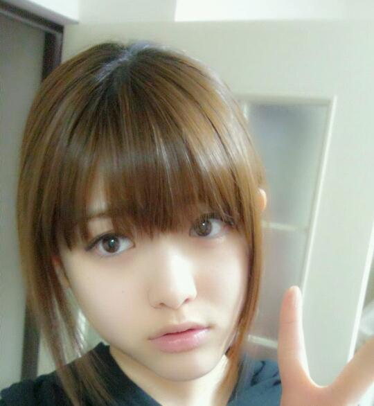

2013/0327Wedマイクが落ちてんっ(o・・o)
こんばんごっっ(o・・o)
さゆりんごっ(o・・o)
今日は
朝にＰＯＮ！の生放送
そして夕方には
春のＰＯＮ！祭りがありました♪
悪天候のなか
沢山の方にお集まりいただけて
すごく嬉しかったです(;_;)
メンバーみんな、雨やから
誰も来てくれやんよな〜(;_;)って
心配していたので
皆さんの姿を見たときは
めっちゃ嬉しかったです！！
そして
君の名は希望の全国握手会
個別握手会とありがとうございました♪
沢山の方とお話できて
嬉しかったです(;_;)
また沢山お話しましょう♪
次は３１日に東京ビッグサイトで
お待ちしてます♪

まいちゃんにみられて照れ照れ(>_<)
今日、シャキイズムをやったのですが
パートナーはマイオではなく
優太朗(優里)でした(*^^*)
優太朗はピョコピョコしたかわいい男の子でした(*^^*)☆
明日はＺＩＰ！春フェスにでます♪
楽しみー(*^^*)

まいちゃんと
タコのお口〜(・３・)ぷ〜
あと！
若様と宇宙飛行士の星出さんとの対談の
模様がＵＰされました！
ほんまにこれは嬉しかったです(;_;)
多分、もう一生できないんやろなってくらい
貴重な体験をしました(>_<)
星出さんのお話はすべてが
興味深くて聞きたいことが沢山あったのですが
時間が限られていたので
本当に惜しかったです(ノ_・,)
星出さんは本当に優しくて
ずっとニコニコとしてはりました(;_;)
素敵や!!!
皆さんの気になっていたことも
お聞き出来たんちゃうかと思います＼(^^)／
是非ご覧ください！
それでは、明日のＺＩＰ！春フェス
頑張ってきます(*^^*)
さゆりんごでしたっ(o・・o)
2013/0323Satアワードっ(o・・o)
こんばんごっっ(o・・o)
さゆりんごっ(o・・o)
かわいいかわいい川後さん
さゆりんの大好きな川後さん
最近松村の行動をよんでくる川後さん
１５歳にはみえないぜ川後さん
前まで１４歳やったなんて信じやんよ川後さん
可愛いものが好きな川後さん
あなたのまいまい愛にドン引きよ川後さん
お誕生日おめでとう川後さん
松村はあなたが２０歳になったら
どんな美少女になってしまうんだろうと
今からハラハラしてます川後さん
いつも魔法かけてもらってます川後さん
恥ずかしいからって
魔法かけちゃうぞっが
早口になっちゃう川後さん
そんなあなたにメロメロドキュン！
あいらぶゆ〜(*^^*)
うふふ
ひなが美少女すぎて
松村がボケてるという...笑
ひなたんおめっと♪
ほんで、今日は
ガールズアワードに
ライブパフォーマンスで出さしていただきました♪
２度目ですが、やっぱり楽しかった♪
お洒落な空間やったので
いつもより緊張しました(>_<)笑
まいやんとななせが歩いてるのも
ちゃんと見れました＼(^^)／
可愛すぎて１ファンとして
感動した(ノ_・,)
「あぁ...まいやん...((((；゜Д゜)))」
「なななななな、なーちゃん〜(;_;)！」
って感じでした(ノ_・,)
ほんまに素敵やった(;_;)
楽屋で盗撮してもうた////てへ
あと、パフォーマンスの後
裏でトリンドルさんに一瞬会いました！
わざわざ、お声をかけてもらったのに
トリンドルさんも可愛すぎて
声が出なかった(笑)
でも優しさに感動しました(;_;)(;_;)(;_;)
嬉しかったよー(;_;)(;_;)
ドラマ頑張ろう(>_<)!
最近、いろんなことがありすぎて
心がワタワタしてる(;_;)(;_;)(;_;)
頭がアチャアチャしてる(;_;)(;_;)(;_;)
心よ、休まれ！！！
握手会や、チャリティライブのことは
また別の記事で書きます！
すみませんm(__)m
みなさま、よい週末を...(*^^*)
松村でしたっ(o・・o)/
2013/0315Fri幸せなお知らせっ(o・・o)
すみません！
急ですが、今日の告知です♪
■日本テレビ「ハッピーMusic」 2013年3月15日（金） 25時33分〜26時28 分
好きな調味料についてお話してます＼(^^)／
みなさんが共感できる
お味はあるかしら？
初選抜のねねたん、せらりんごにも
注目〜〜〜〜(*^^*)！！！
■関西テレビ「ミュージャック」 2013年3月15日（金） 25時59分〜26時29 分
こちらは関西圏での放送です♪
カットされてなければ
松村の初めて披露する特技がみれます！！
さぁ、なんやろね〜(*^^*)
お楽しみにっ♪
あと、沢山の方に聞いて頂いてる
君の名は希望ですが、
なんと着うたが
カップリングも全曲配信されたので、
ぜひレコチョクでDLしてみてください！
レコチョクでは、
待ち受け画像がもらえたり、サイン入り色紙やポスターが抽選で当たるねんてっ＼(^^)／
きゃっほいやね〜(*^^*)♪
DLはこちらから！
もっと沢山の方に好きになって
もらえますようにっ(*^^*)
それでは寝ます！
何度もすみませんm(__)m
もう、ｏｆｆりんごです

つぎこそ、おやすみなさいませ〜(*^^*)/~~~~~
2013/0315Fri明日は...っ(o・・o)
こんばんごっっ(o・・o)
さゆりんごっっ(o・・o)
昨日のブログ
興奮しすぎて
さゆりんごっっ(o・・o)っての
忘れてた////どうでもいいがっ////
そして、雑誌買うよーって言ってくださる皆さん
優しすぎます(;_;)
大好きです(;_;)(;_;)(;_;)(;_;)
ありがとうございます(;_;)
今日はすごくポカポカな日でしたね♪
もう春なんかな〜？
春は大好きな季節なんですが
去年から花粉症でして
めっちゃ くしゃみしちゃうんよ〜(ノ_・,)
お目めもごしごし
したくなるんよ〜(ノ_・,)
みなさん花粉症大丈夫ですか？
明日は君の名は希望の
握手会です＼(^^)／
皆さんとお会いするんは
１ヵ月ぶりなんかな〜(^^)？
緊張すんね/////
何話す〜////？
話題ないよ〜(;_;)
緊張するよ〜(;_;)
何話したらええんよ〜(;_;)って皆さんに
質問です♪♪
プレイボーイの
どの松村がお好きですか？
それからもう１つ！
今回のカップリングに
ロマンティックいか焼きという曲があるのですが
松村のソロパートは
どこでしょう！？
難しいかな〜(ノ_・,)？
まぁ気軽にお答えくださいっ♪
来られない皆さんも
コメントお待ちしてます♪
それでは、明日も一日
楽しみましょう♪
さゆりんでしたっ(o・・o)/~
おやすみなさいませっ♪
2013/0315Fri嬉しさしかないっ(o・・o)
こんばんごっっ(o・・o)
みなさん！
FINEBOYSとプレイボーイ
みてくださりましたか？！
どちらとも初めてなので
どきどきで載っている自分に
感動です(;_;)
FINEBOYSは松村の好みのスタイルが
沢山なので
一緒にお勉強しましょー＼(^^)／
しかも
あんなにお洒落な松村
今後みれないと思いますよ(笑)
プレイボーイは
実はずっと前から
いつかソロで載るのが夢やった雑誌なのです(;_;)(;_;)(;_;)
撮影があると言われたときは
倒れそうなほど嬉しかったです(;_;)(;_;)
撮影も雪のなかやったのですが
全然寒さを感じないくらい
楽しかったです(*^^*)(*^^*)(*^^*)(*^^*)
ロイヤルミルクティーとゆう素敵なテーマで
素敵な衣装も着せてもらい
素晴らしいスタッフさんのもと
撮影しました！
今までにないさゆりんやと
思います！
猫ちゃんのときは
お尻も強調しましたよ！
はみけつを直しながら撮影したよ！
ドレスも可愛くて嬉しいのです(ノ_・,)
殿方に抱き付いて撮影した...の...カナ？
そして綺麗な生写真が当たりますよ！
世界に一枚しかないです！
正直、松村が欲しかった...
本誌には載ってないポーズの写真ですよ！
ハガキ送るしかないよ！
いつ送るの？
今でしょ！！！！
こちらも今後、ソロなんて
絶対ないですよ！
しかも、松村沙友理の初ソログラビアよ！
松村の初めてやよー！！
こりゃ
保存用
観賞用
両親用
隣近所用に
５冊は買わないとやな(>_<)！！！！
ちなみに松村は１０冊買いますよ！多分！笑
あと、乃木坂４６の５Ｔｈシングル
君の名は希望が
デイリーチャートで１位になりました！
ほんまにありがとうございます(;_;)(;_;)(;_;)(;_;)
そのお祝いにFINEBOYSとプレイボーイも
お求めください(;_;)(;_;)(^.^)(;_;)(;_;)笑
こんなに言っているのは
正直、また載りたいからです！！！！！
自分の本心は隠しません！！！
また載りたい(;_;)(;_;)(;_;)
その為に
皆さんのお力貸してください。
きっと反響があれば
またお呼ばれされる...はず(笑)
がめつい松村をお許しください！！(;_;)(;_;)(;_;)
明日も皆さんのために
お仕事頑張ります！！
松村沙友理でしたっ(o・・o)/~
みなさん！
FINEBOYSとプレイボーイ
みてくださりましたか？！
どちらとも初めてなので
どきどきで載っている自分に
感動です(;_;)
FINEBOYSは松村の好みのスタイルが
沢山なので
一緒にお勉強しましょー＼(^^)／
しかも
あんなにお洒落な松村
今後みれないと思いますよ(笑)
プレイボーイは
実はずっと前から
いつかソロで載るのが夢やった雑誌なのです(;_;)(;_;)(;_;)
撮影があると言われたときは
倒れそうなほど嬉しかったです(;_;)(;_;)
撮影も雪のなかやったのですが
全然寒さを感じないくらい
楽しかったです(*^^*)(*^^*)(*^^*)(*^^*)
ロイヤルミルクティーとゆう素敵なテーマで
素敵な衣装も着せてもらい
素晴らしいスタッフさんのもと
撮影しました！
今までにないさゆりんやと
思います！
猫ちゃんのときは
お尻も強調しましたよ！
はみけつを直しながら撮影したよ！
ドレスも可愛くて嬉しいのです(ノ_・,)
殿方に抱き付いて撮影した...の...カナ？
そして綺麗な生写真が当たりますよ！
世界に一枚しかないです！
正直、松村が欲しかった...
本誌には載ってないポーズの写真ですよ！
ハガキ送るしかないよ！
いつ送るの？
今でしょ！！！！
こちらも今後、ソロなんて
絶対ないですよ！
しかも、松村沙友理の初ソログラビアよ！
松村の初めてやよー！！
こりゃ
保存用
観賞用
両親用
隣近所用に
５冊は買わないとやな(>_<)！！！！
ちなみに松村は１０冊買いますよ！多分！笑
あと、乃木坂４６の５Ｔｈシングル
君の名は希望が
デイリーチャートで１位になりました！
ほんまにありがとうございます(;_;)(;_;)(;_;)(;_;)
そのお祝いにFINEBOYSとプレイボーイも
お求めください(;_;)(;_;)(^.^)(;_;)(;_;)笑
こんなに言っているのは
正直、また載りたいからです！！！！！
自分の本心は隠しません！！！
また載りたい(;_;)(;_;)(;_;)
その為に
皆さんのお力貸してください。
きっと反響があれば
またお呼ばれされる...はず(笑)
がめつい松村をお許しください！！(;_;)(;_;)(;_;)
明日も皆さんのために
お仕事頑張ります！！
松村沙友理でしたっ(o・・o)/~